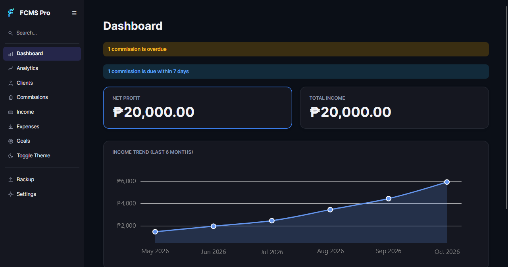
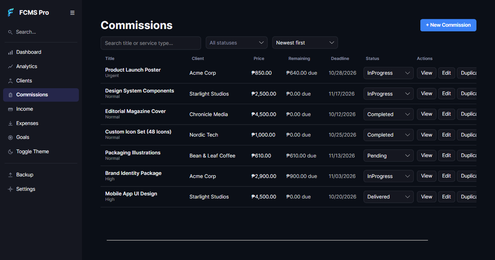
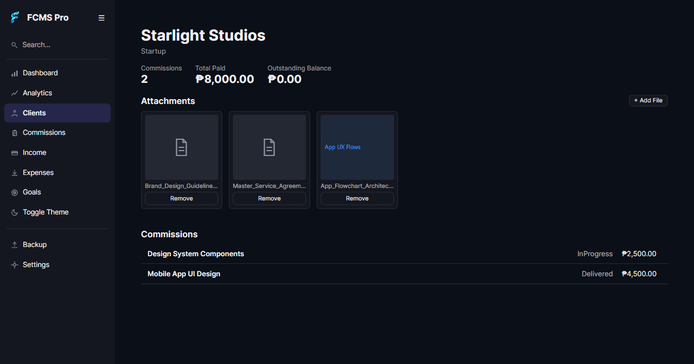
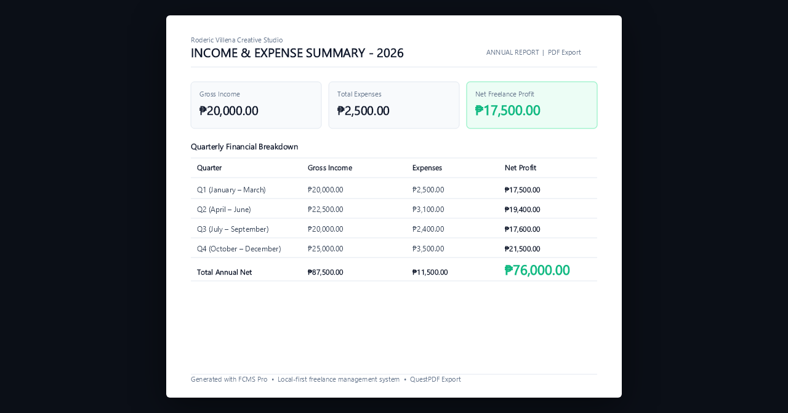
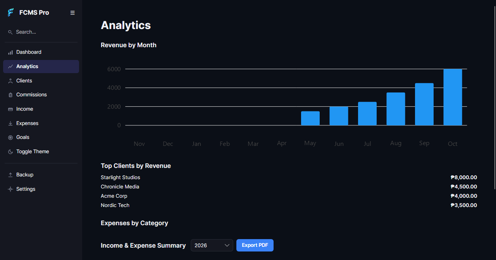
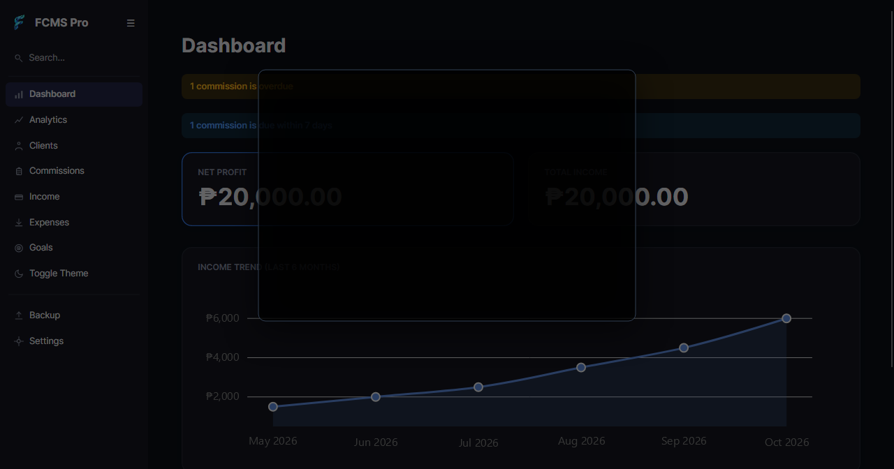
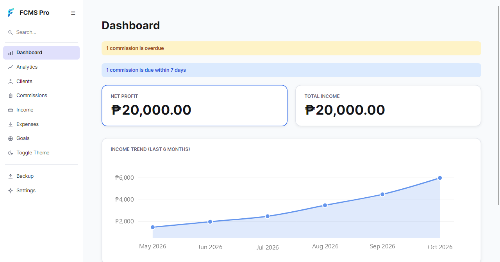

FCMS Pro Local-first
- All data lives in one SQLite file on your computer
- No account to create and no monthly fee
- No telemetry
- Export everything to a single .json file whenever you like
- Open source under the MIT license, so you can read the code
Version 1.6.9 New
Track clients, commissions, payments, expenses and tax summaries in one desktop app. Everything is stored on your own computer, not on someone else’s server.
FCMS Pro is a desktop app. Send yourself the link and download it on your computer.

Watch creator Roderic Villena walk through every core feature, installation, and client workflow in under 4 minutes.
0:00 Intro & Local SQLite
0:45 Cross-Platform Install
1:20 Dashboard & Philippine Pesos (₱)
2:05 Attachments, Kanban & Tax PDF
3:10 Client Inquiries & Messenger
One window for the whole freelance client lifecycle.
Income, balances, overdue items and due-soon warnings at a glance.

Status pipeline from Pending through Delivered, with quick inline status updates and balance tracking.

Client profiles showing total billed, payments received, commission history, and file attachments like signed contracts.

Export annual and quarterly financial summaries to clean, printable PDF reports for tax preparation.

Income breakdowns by client, payment method distribution, and net profit trends.

Press / anywhere to search clients, commissions, income, and expenses instantly.

Light or dark mode with customizable accent colors. Switch with Toggle Theme in the sidebar.
Many invoicing tools keep your financial data on the provider’s servers. FCMS Pro does the opposite.
Income, balances, overdue items and due-soon warnings at a glance.
Profiles with what each client owes and has paid, their commission history, and file attachments such as signed contracts.
Full lifecycle tracking with instant filtering by status, search, and due-date visibility.
Repeat commissions weekly, biweekly or monthly, and recurring expenses like subscriptions.
Keep contracts, briefs, reference photos, and assets organized directly under each client.
Recording a payment reduces the balance automatically. Refund to undo it and restore the balance.
Generate clean, professional annual or quarterly tax summaries formatted for accounting with QuestPDF.
Log expenses by category and track net profit: income minus expenses.
Set monthly or yearly income and expense targets and see how you’re tracking.
Visual breakdowns of revenue, payment status distribution, and commission trends over time.
Press / to search across clients, commissions, income, and expenses.
Jump to any section with g sequences or create records with n sequences without touching the mouse.
Carefully tuned high-contrast dark and light modes, switchable instantly or synced to system preference.
Soft delete means a client, commission, or expense you remove by accident isn’t gone for good.
Manual export and import, plus automatic local backups with a configurable retention count.
A read-only audit history of records created, updated and deleted, and backups.
Pick the installer for your system from the download page. Your OS will warn that the app is unsigned; here is why and what to do.
Run the Windows installer, open the macOS .dmg, or install the Linux .deb or run the AppImage. No account is needed at any point.
A short first-run flow:
Shortcuts are switched off while you’re typing in a text field. Two-key shortcuts need the second key within about a second.
FCMS Pro checks for a newer version when it starts and offers to install it. This page always shows the latest release.
logo-wordmark.png to a transparent RGBA asset.AppUserModelID in Program.cs and installer shortcuts, and binding WindowIcon across window constructors.FCMS Pro is not code signed, because that needs a paid certificate. Windows SmartScreen and macOS Gatekeeper warn about unsigned apps. That is expected, as long as you downloaded it from this site or the project’s GitHub Releases page.
Windows: click More info, then Run anyway.
macOS 14 or earlier: right-click the app, choose Open, then confirm.
macOS 15 or newer: try to open it once, then use System Settings → Privacy & Security → Open Anyway.
SHA256SUMS.txt with each release). It confirms the file matches what was published.
Get-FileHash -Algorithm SHA256 .\FcmsPro-Setup-1.6.9.exeshasum -a 256 FcmsPro-1.6.9-arm64.dmgOn Linux use sha256sum the same way. FCMS Pro has no telemetry, and the full source code is on GitHub.
In a single SQLite file on your own computer: %APPDATA%\FcmsPro on Windows, ~/Library/Application Support/FcmsPro on macOS, and ~/.local/share/FcmsPro on Linux. There is no server, no account and no telemetry. The first-run setup also shows you this folder.
Open Backup and choose Export. It saves your clients, commissions, payments, expenses and more to a single .json file. Import restores it, either merging with or replacing what is there. FCMS Pro also keeps automatic local backups with a retention count you can configure.
Those automatic backups live on the same computer, so keep an export somewhere else too. There is no cloud copy to fall back on. Everything is stored locally on your machine with zero cloud dependency.
Your database is kept in your user data folder, separate from the program files, so installing a new version doesn’t replace it. When a new version changes how data is stored, the app applies those database migrations automatically on launch. It is still good practice to export a backup before you update.
Uninstalling is different: on Windows the uninstaller also deletes the %APPDATA%\FcmsPro data folder, so export a backup first if you want to keep your records.
The app is not code signed, because that needs a paid certificate. See Security & trust for the steps on Windows and macOS.
Run Get-FileHash -Algorithm SHA256 in PowerShell on Windows, or shasum -a 256 on macOS or sha256sum on Linux, and compare the result with the SHA-256 on the download page.
Windows (64-bit installer), macOS on Apple Silicon (macOS 11 or newer), and Linux x64 as a .deb or .AppImage. There is no Intel Mac build and no native ARM build for Windows or Linux yet. If you need one, open a request.
FCMS Pro checks GitHub for a newer version when it starts and offers to install it. You can always download the newest installer from the download page, and the full history is in the changelog.
Please use GitHub Issues. You can also reach the author on Messenger.
FCMS Pro is free, privacy-first and open source. If it saves you time, you can help fund future development.